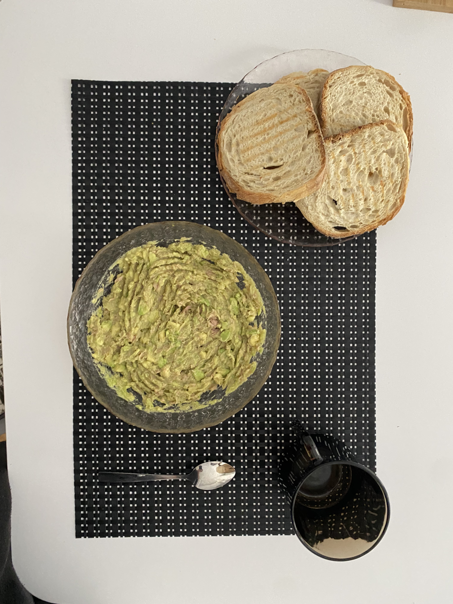

16 noiembrie 2024
Alba Iulia
💜 Te iubesc pentru grija ta prin detalii marunte 💜
Dimineața e cea mai grea parte a zilei pentru mine. Din momentul in care deschid ochii sunt copleșit de toate gândurile si responsabilitățile. Cu toate astea,
când ești blocat in gânduri infinite, gesturile mici sunt cele mai frumoase. Când te trezești si vezi ca persoana iubita și-a luat din timpul ei ca să-ți facă
dimineața mai ușoară este minunat. Iar tu ai făcut asta de fiecare când ai avut ocazia. Mereu ai reușit sa ai grija de mine prin gesturile mărunte, care faceu o
zi rea sa fie buna, iar o zi buna sa fie extraordinara. Daca le pun in balanța, aș servi cu mai mult drag o cafea arsa făcută de tine decât un mic dejun scump.